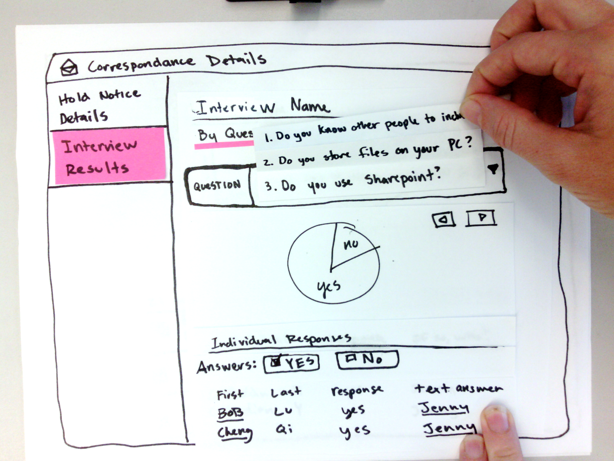

Stored IQ for Legal
Background/Overview:
The IBM Information Lifecycle Governance portfolio helps clients manage the lifecycle of unstructured business information and data. As part of IBM Design Thinking's Hallmark Project program, ILG has initiated a design-first strategy to consolidate all offerings within the portfolio.
The design team was brought in mid-2014 to help facilitate the strategy of these offerings and produce new, user-friendly products. The first of these is Stored IQ for Legal, a comprehensive offering for IBM's previous eDiscovery and Early Case Assessment products.
StoredIQ for Legal allows legal teams to find and analyze unstructured information in place to gain faster insight into data and help ensure only the right information is collected. Approximately 90 percent of corporate cases are settled prior to the collection process. In many organizations where no insight into data associated with a case is available, a settlement is made with little to no information regarding the actual merits of the case. StoredIQ for Legal is designed to accelerate the eDiscovery process and provide legal teams with insight into relevant data in-place prior to collection. Legal teams can save time and gain flexibility by not having to move data before analysis. They can take action on data before collection, acquiring insights from data in a matter of hours versus weeks and using that knowledge to make more informed business decisions.

Outcomes
- Improved relationships with angry/at-risk clients. One was quoted as saying "This is amazing. It's like a rainbow-farting unicorn compared to [old product]."
- General UX improvement to product, with much needed acessibility improvements
- Sold to several clients by second release, fulfilling high-priority contracts by R3
Roles:
- Design product team lead from R2 - present
- Promoted cross-discipline collaboration with extended team of Project Managers, Development, and Engineers.
- Responsible for a majority of the UX design and architecture of product
- Responsible for all visual design in R1
All projects must start with a challenge, so here was ours: How do you build a simplified, consolidated product that pulls on features of 3+ existing IBM products? It's easy. Talk to your users.
In initial interviews with customers in the eDiscovery space, we discovered that people were either using our products or did everything by spreadsheets, paper, and a whole lot of man hours. While the existing solutions were workhorses in terms of technical ability, they were nearly impossible to use without consulting a manual. This high learning curve turned several people away. Those who did use it made comments like "using [old product] is like driving at night without headlights on!"" Ouch.
It became clear that design's role here was not just to improve a bad process by offering a product. Our responsibility was to make said product SO easy to use it no longer became an issue to have software aid the process of eDiscovery.
When working with a team that is new to embracing design thinking a persona exercise becomes essential to building cross-team alignment around our user. Only when we empathize with our users can we really start to understand their pain and begin to advocate solutions for them. We interviewed 8+ customers and the roles within each of their legal teams. While there were over 15 different possible personas, we narrowed them down to six archetypes. You'll notice that one is missing, as their rolea are essential to an un-released area of the product. ;)

After the team aligned on personas, we evaluated previous interviews we were able to create journey maps for each role, lay them over each other, and understand where flows aligned. From here we identified pain points and moments of opportunity.

After generating a list of pain points, team was able to take these areas and match them against PM's asks. While several were identified, we'll focus on one topic for now - interviews. We quickly prototyped what this flow could look like.
Then, we went back to our users and validated our concepts and assumptions. Our paper prototypes took another round and once the concepts were solidified, we moved on to mid-fidelity wires.

At this point, we focus more on usability and other granular details. We tested at this level with people in the studio, as well as existing clients. Feedback on actions, items, and layout were all considered and improved before moving to high fidelity wires done by our visual designer.

We are currently on R3 of the product. Come back in a few months and we'll have more goodness!